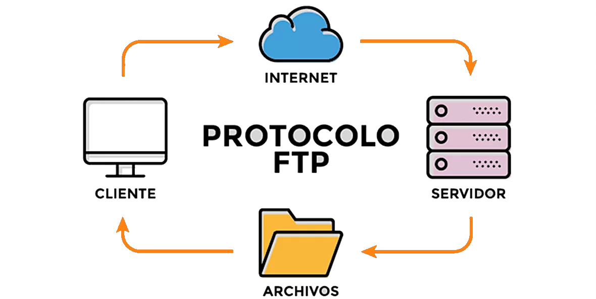
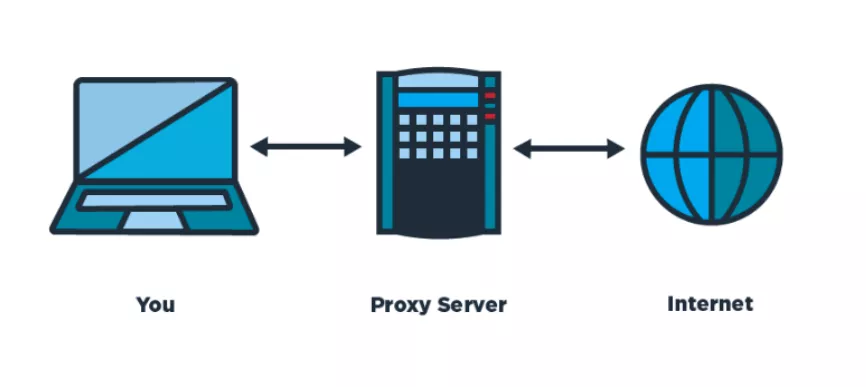

¿Qué es un servidor?
Un servidor alude a una computadora remota a la
que los navegadores le solicitan datos desde otras computadoras.
Además, los servidores pueden almacenar información en forma de páginas web en
formato HTML que después envían a los usuarios que las piden por medio
del protocolo HTTP.
Los servidores suelen utilizarse para almacenar archivos digitales. El
cliente, por lo tanto, se conecta a través de la red con el servidor y accede
a los archivos en cuestión. En ocasiones, el equipo puede cumplir con las
funciones de servidor y de cliente de manera simultánea.
Finalidad de los servidores
Un servidor ayuda a proporciona recursos, datos, servicios o programas a otros ordenadores, conocidos como clientes, a través de una red. Puede estar diseñado para realizar una sola tarea, como servidor de correo, que acepta y almacena mensajes de correo electrónico y, luego, se los proporciona a un cliente. También pueden realizar más de una tarea, como un servidor de archivos e impresión que almacena archivos.
Tipos de servidores
Servidores FTP:
File Transfer Protocol permite mover uno o más archivos. Con una de las alternativas más importantes que nos permite Internet es la transferencia de archivos de una computadora a otra desde cualquier parte del mundo. Para ello utilizamos el protocolo de transferencia de archivos o “FTP”.
Servidores Groupware:
Un servidor groupware es un software diseñado para permitir colaborar a los usuarios, sin importar la localización, vía Internet o vía Intranet corporativo y trabajar juntos en una atmósfera virtual.
Servidores Proxy:
Los servidores proxy se sitúan entre un programa del cliente (típicamente un navegador) y un servidor externo (típicamente otro servidor web) para filtrar peticiones, mejorar el funcionamiento y compartir conexiones.
Servidores Web
Un servidor web sirve contenido estático a un navegador, carga un archivo y lo sirve a través de la red.
Servidor de Base de Datos:
Da servicios de almacenamiento y gestión de bases de datos a sus clientes. Una base de datos es un sistema que nos permite almacenar grandes cantidades de información.

Servidores Virtual:
Un servidor virtual recrea la funcionalidad de un servidor físico. Existe de manera transparente para los usuarios como un espacio de partición dentro de un servidor físico. La virtualización de los servidores facilita la reasignación de recursos y la adaptación a las cargas de trabajo dinámicas. se configura para que varios usuarios puedan compartir su potencia de procesamiento.

Características
- Capacidad de alamcenamiento
- Seguridad
- Hardware del servidor
- Soporte
- Escabilidad
- Entorno dedicado
- Disponibilidad